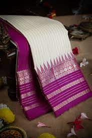
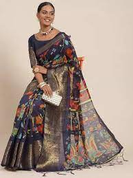

We provide you a beautiful handpicked sarees

Cotton
The Cotton printed sarees gives a pure comforting ease. Cotton Sarees are the most preferred sarees for Indian Women. You can exploitcotton sarees in your every day wear especially during the summer months.

Organza
Organza sarees are relatively luster-free when compared to silk sarees. They have a matte finish that looks elegant. Organza is a material that is sturdy and tends to last longer than other conventional materials used in the making of sarees.

Silk
TheIndian silk sarees are known for their lustrous beauty and incomparable varietyof designs and colors. These sarees are known to be the traditional bridal wearfor most of the Indian brides. No wedding is complete without the luxurious andexpensive sarees made of pure silk.